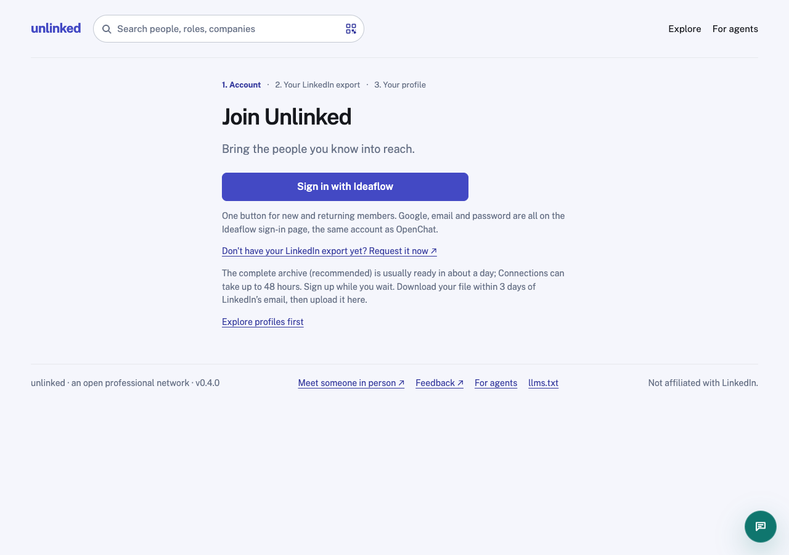

Keep export help within reach while someone creates a profile, waits for LinkedIn, or returns later. These screens use fictional data; nothing is uploaded or sent.
Verified live, October 7: the homepage presents export → profile → upload. The join screen instead labels account → export → profile. Export help survives sign-up, but is a small external link. The current main-branch upload view also contains instructions below the form; its step labels are not links.

Recommendation: use the same named tasks across entry, sign-up, profile and import; omit ordinal numbers in product navigation. Keep sign-in as a prerequisite, not a differently numbered journey. A skipped task stays available rather than gaining a checkmark. One shared help component should also have a standalone, signed-out route at /import-linkedin.
State contract: “I’ve requested my export” is an explicit self-report. Opening LinkedIn is not proof of a request. Persist request time and deferred state to the signed-in account; show exact “You marked this requested…” dates in production. Never infer completion from elapsed time. Derive profile/import completion from actual records. Keep request status editable; preserve draft fields and file selections when help opens. On sign-in, retain the intended destination.
Return paths: keep Import & export help in account navigation and the unfinished import card on Profile and My connections. Once imported, retire the setup reminder while keeping help in Settings → Imports. Do not repeatedly reopen onboarding or send reminder emails without opt-in.
Failure and trust: preserve the existing visibility/consent policy at upload. Separate uploading (keep page open) from server processing (safe to leave). Offer a next action for wrong file, size limit and retryable server failures. A connections-only import succeeds but may leave profile fields incomplete. Avoid “Built from your file” when no file was imported.
Scope and evidence: mocks only; no production changes. Anonymous /, /join and /import-linkedin were inspected live; signed-in behavior was reviewed in origin/main at 0fe29d4, not exercised against a real account. Product styling: existing Public Sans, indigo #4349c4, pale #f5f6fc page, 8px corners. Timing and download copy follows the existing product and should share its maintained help source.